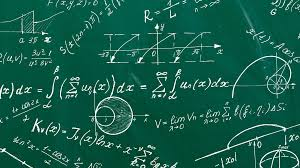

Area Scientifico-Tecnica
Matematica
Lo studio dell'analisi matematica: dal calcolo differenziale a due variabili all'integrazione per il calcolo di aree e volumi complessi.

Lo studio dell'analisi matematica: dal calcolo differenziale a due variabili all'integrazione per il calcolo di aree e volumi complessi.

La matemqatica è sempre stata una della mie materie in assoluto da quando son bambino. Non ci ho mai messo troppo a capire i concetti e soprattutto mi son sempre esercitato e forse è proprio quello che ha fatto la differenza. la cosa che mi spaventava ma che alla fine invece si è rivelata una sciocchezza sono stati gli integrali. Inizialmente ti mettono un po' di angoscia perchè pieni di simboli strani e non sai come risolverli, ma posso dire che con un po' di pratica sono anche divertenti da risolvere.